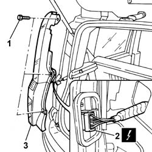
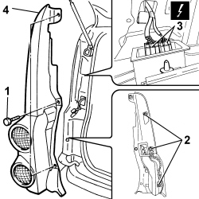
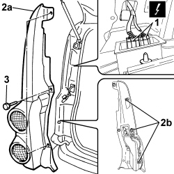

5540A44 L/H OR R/H TAIL LIGHT (ONE) - R+R
- Path
- Procedures > 55 ELECTRICAL EQUIPMENT > 5540 EXTERIOR LIGHTING > 5540A LIGHTING > 5540A44 L/H OR R/H TAIL LIGHT (ONE) - R+R
- Kind
- repair procedure (removal / refitting; the operation number is the code)
- Applies to
- all engines; all production periods
- Interactive page
- https://sloeber94.github.io/elrnDB-fPnd/en/#/2752970
Applies to: all engines; all production periods
 Removing
Removing
 Refitting
Refitting
Applies to: engines: 1.3 JTD 16v; all production periods; only with equipment: SUV
Removing
RefittingDisconnect the negative battery terminal.
1. Undo the retaining bolts.
2. Release the fastening studs.
3. Disconnect the electrical connections.
Description | Connector | |
|---|---|---|
3 | Left tail-light cluster | F030A |
Description | Connector | |
|---|---|---|
3 | Left rear light cluster | F030B |
Description | Connector | |
|---|---|---|
3 | Right tail-light cluster | F031A |
Description | Connector | |
|---|---|---|
3 | Right tail-light cluster | F031B |
4. Remove the tail-light cluster.

Applies to: engines: 1.3 JTD 16v; all production periods; only with equipment: SUV
Refitting
Removing1. Connect the electrical connections.
Description | Connector | |
|---|---|---|
1 | Left rear light cluster | F030A |
Description | Connector | |
|---|---|---|
1 | Left rear light cluster | F030B |
Description | Connector | |
|---|---|---|
1 | Right tail-light cluster | F031A |
Description | Connector | |
|---|---|---|
1 | Right tail-light cluster | F031B |
2. Position the tail-light cluster (2a) and secure with studs (2b).
3. Tighten the fixing bolts.

Applies to: engines: 1.3 JTD 16v; all production periods; only with equipment: SUV
Connect the negative battery terminal.
Topics that link to this page (9)
- I01 SIDE LIGHTS/NO. PLATE LIGHTS NOT WORKING
- I10 DIRECTION INDICATORS / HAZARD WARNING LIGHTS / NOT WORKING
- I12 TURN SIGNALS RH OR LH SIDE NOT WORKING
- I14 BRAKE LIGHTS AND THIRD BRAKE LIGHT NOT WORKING
- I17 REVERSING LIGHTS NOT WORKING
- I21 REAR FOG LAMPS NOT WORKING
- I39 TURN SIGNALS DO NOT WORK WHEN HAZARD KEY IS PRESSED
- 5540A50 TAIL-LIGHT BULB (ONE), LH OR RH - REPLACE
- 7035C54 side window one lh or rh r r includes cleaning of housing